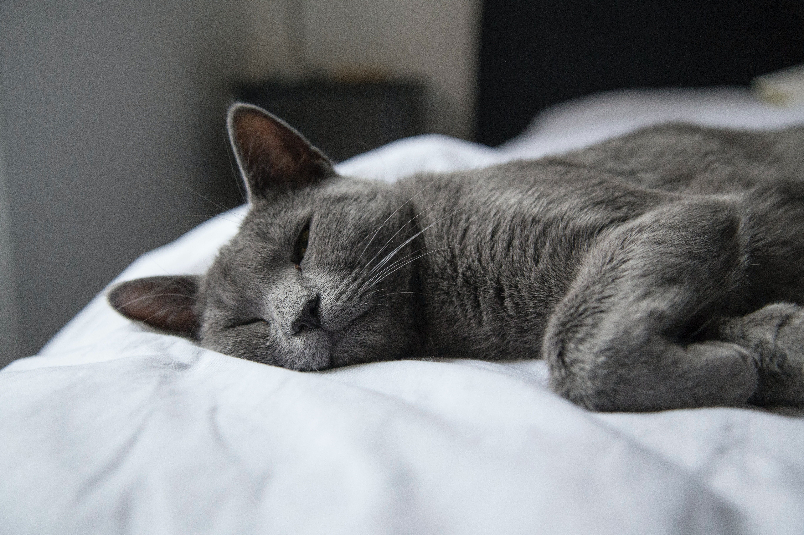

Russian Blue
The Russian Blue is a cat breed that comes in colors varying from a light shimmering silver to a darker, slate grey. Their short, dense coat, which stands out from the body, has been the hallmark of the Russian breed for more than a century.
Russian Blues are plush short-haired, shimmering pale blue-gray cats with emerald green eyes. Guard hairs are distinctly silver-tipped giving the cat a silvery sheen or lustrous appearance. They have been used on a limited basis to create other breeds such as the Havana Brown or alter existing breeds such as the Nebelung. They are being used in Italy as a way to make Oriental Shorthairs healthier and more robust called RUS4OSH in FIFe.